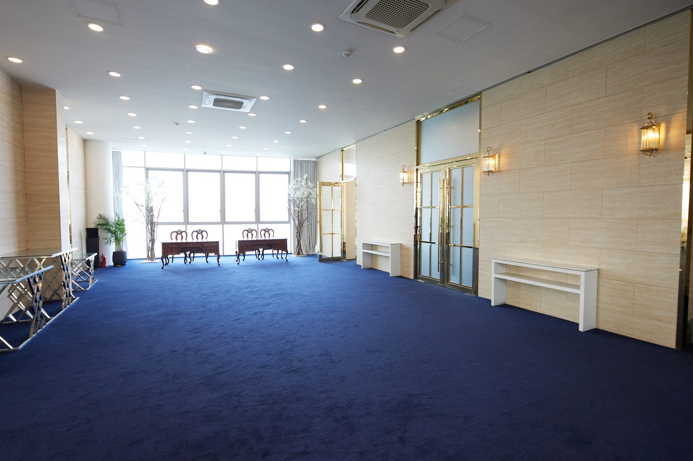
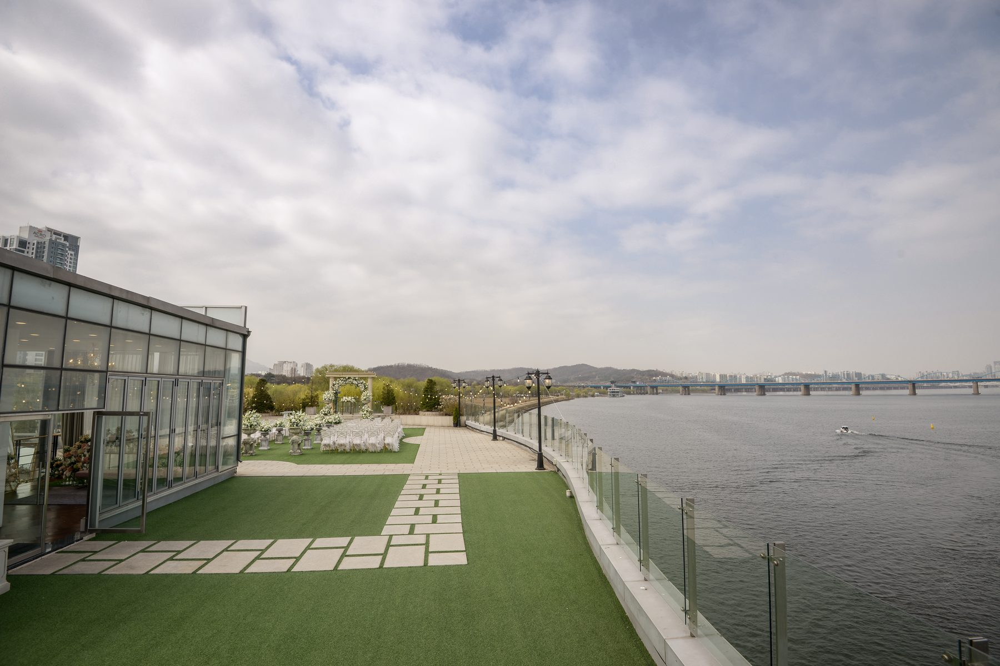

1F
Marina Cafe
마리나파크 1층은 한강이 보이는 카페입니다. 이국적인 분위기에서 커피와 티, 디저트, 피자와 파스타, 와인을 즐길 수 있으며, 카페 가든에서는 생일 모임·동호회·소규모 파티를 열 수 있습니다. 영업시간 매일 10:00 – 22:00.
Cafe MenuMarina Park
반포 한강 서래나루의 세 가지 공간
1F
마리나파크 1층은 한강이 보이는 카페입니다. 이국적인 분위기에서 커피와 티, 디저트, 피자와 파스타, 와인을 즐길 수 있으며, 카페 가든에서는 생일 모임·동호회·소규모 파티를 열 수 있습니다. 영업시간 매일 10:00 – 22:00.
Cafe Menu
2F
2층 컨벤션홀은 송년회·기업연회·런칭쇼·MICE 단체행사·가족연회·예식을 위한 공간으로, 100명부터 최대 300명까지 식사 세팅이 가능합니다. 무대·LED 영상·음향 장비를 모두 갖추고 있으며, 사면이 통유리로 되어 있어 한강의 정취를 그대로 즐길 수 있습니다.
Business Party
3F
대리석 단상 위로 화이트 대리석 가제보가 있는 3층 루프탑 가든은 한강이 그대로 내려다보이며 서리풀 공원의 조경과 어우러집니다. 가든 예식, 칵테일 리셉션, 선셋 파티, 송년회 애프터파티에 쓰이며 우천 시에는 2층 홀로 전환합니다.
Garden WeddingVenue facts
층별 용도와 규모를 한눈에 정리했습니다.
Floors: 1F Marina Cafe (daily 10:00–22:00) · 2F Convention Hall for 100–300 guests with stage, LED and sound, floor-to-ceiling river views · 3F Rooftop Garden with a white marble gazebo for ceremonies and receptions. Rain backup: the 2F hall.
Anniversary Flower · Romantic Garden Wedding · A Perfectionist on Every Detail